CS-01TP · BTS SIO 2e année · Réseau
IPsec sécurise les échanges au niveau IP (couche 3). Entre deux réseaux, on l'utilise en mode tunnel : le paquet d'origine est entièrement chiffré puis encapsulé dans un nouveau paquet IP entre les deux pfSense.
| Mode transport | Mode tunnel | |
|---|---|---|
| Usage | Entre deux hôtes | Entre deux réseaux (VPN site à site) |
| Chiffré | Données seulement | Paquet IP complet |
| Nouvel en-tête IP | Non | Oui, adresses internes masquées |
La connexion se négocie en deux phases, à paramétrer à l'identique des deux côtés :
| Port | Rôle |
|---|---|
| UDP 500 (ISAKMP) | Premiers échanges IKE ; toute la négociation s'il n'y a pas de NAT. |
| UDP 4500 (NAT-T) | Si un NAT est détecté : négociation, keepalives et données ESP encapsulées. |
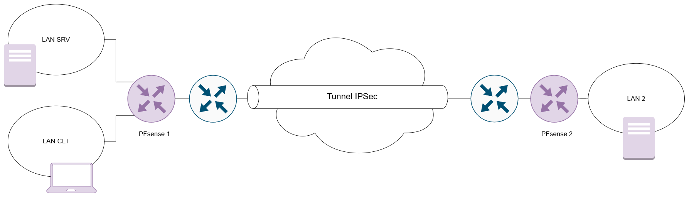
| Site 1 | Site 2 | |
|---|---|---|
| WAN pfSense | 172.16.0.1 | 172.16.0.2 |
| Réseau LAN | 192.168.10.0/24 | 192.168.20.0/24 |
| LAN pfSense | 192.168.10.254 | 192.168.20.254 |
| Serveur de test | 192.168.10.10 | 192.168.20.10 |
Les deux LAN doivent être différents. S'ils se chevauchent, le routage ne sait pas de quel côté se trouve une adresse : il faut alors un NAT en phase 2 (voir § 8).
En TP, les WAN sont souvent dans un réseau privé. pfSense bloque par défaut les adresses privées sur le WAN, ce qui empêche les deux pairs de se joindre. Sur les deux pfSense : Interfaces → WAN → décocher Block private networks and loopback addresses → Save → Apply Changes.
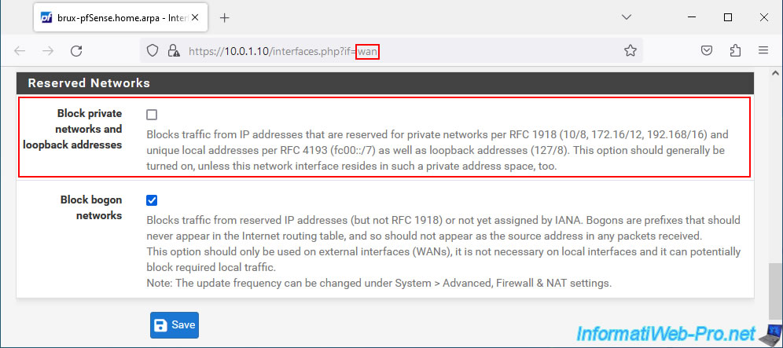
En production, avec des WAN publics, on laisse cette option cochée. pfSense ajoute automatiquement sur le WAN les règles qui autorisent IKE, NAT-T et ESP depuis la passerelle distante.
VPN → IPsec → Tunnels → Add P1.
| Paramètre | pfSense 1 | pfSense 2 |
|---|---|---|
| Description | VPN vers Site 2 | VPN vers Site 1 |
| Key Exchange version | IKEv2 | IKEv2 |
| Internet Protocol | IPv4 | IPv4 |
| Interface | WAN | WAN |
| Remote Gateway | 172.16.0.2 | 172.16.0.1 |
| Authentication Method | Mutual PSK | Mutual PSK |
| My identifier | My IP address | My IP address |
| Peer identifier | Peer IP address | Peer IP address |
| Pre-Shared Key | Generate new Pre-Shared Key | la même clé, copiée |
| Encryption Algorithm | AES · 256 bits · SHA256 · DH 14 (2048 bit) | idem |
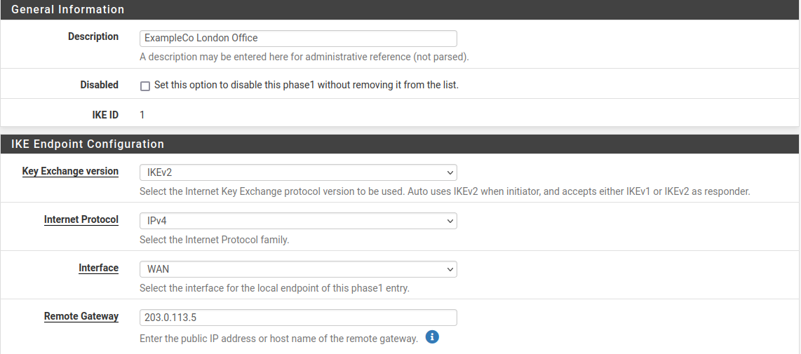
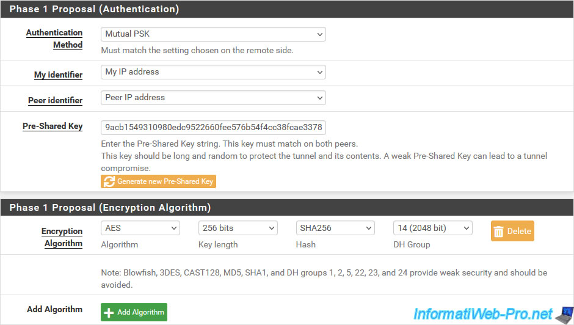
Laisser les durées de vie par défaut, ou mettre les mêmes valeurs des deux côtés. Save → Apply Changes.
La clé partagée se transmet par un canal sûr (pas par courriel en clair). Générée sur le pfSense 1, elle est collée telle quelle sur le pfSense 2.
Sous la phase 1 : Show Phase 2 Entries → Add P2.
| Paramètre | pfSense 1 | pfSense 2 |
|---|---|---|
| Mode | Tunnel IPv4 | Tunnel IPv4 |
| Local Network | LAN subnet | LAN subnet |
| NAT/BINAT translation | None | None |
| Remote Network | Network 192.168.20.0/24 | Network 192.168.10.0/24 |
| Protocol | ESP | ESP |
| Encryption Algorithms | AES256-GCM, 128 bits | idem |
| PFS key group | 14 (2048 bit) | idem |
| Automatically ping host | 192.168.20.10 | 192.168.10.10 |
| Keep Alive | coché | coché |
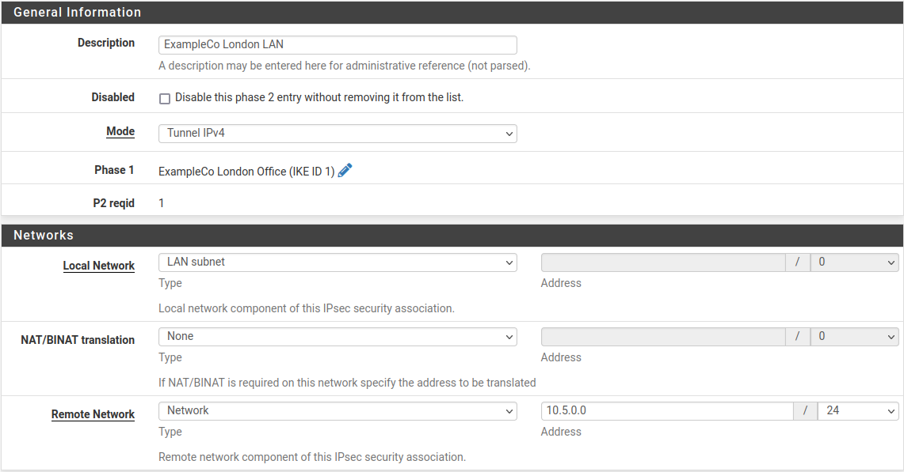
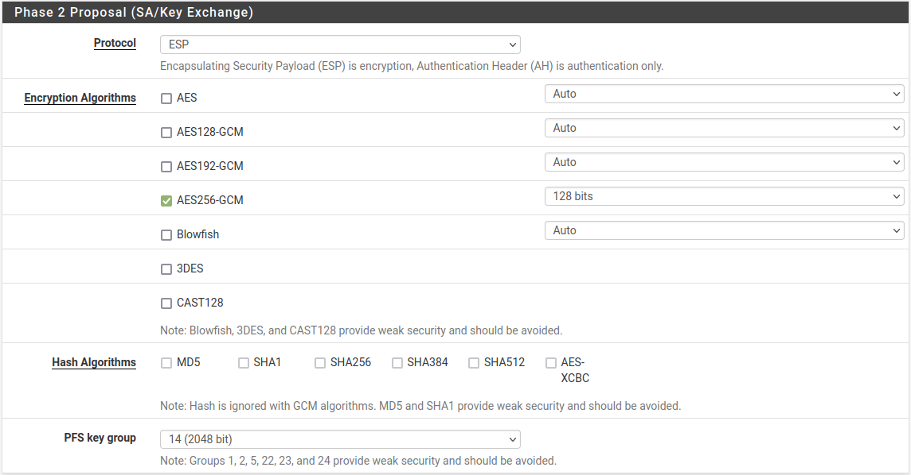
Le ping automatique et le keep alive (section Keep Alive en bas de la phase 2) envoient régulièrement du trafic dans le tunnel : il monte tout seul et ne retombe pas faute d'activité. Save → Apply Changes.
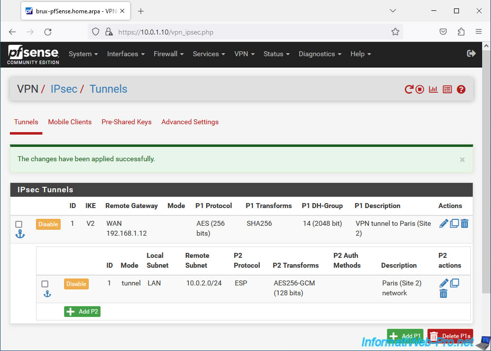
Une fois IPsec activé, pfSense crée l'onglet Firewall → Rules → IPsec. Le trafic qui sort du tunnel y est filtré ; par défaut tout est bloqué. Sur chaque pfSense, ajouter une règle :
| Champ | pfSense 1 | pfSense 2 |
|---|---|---|
| Action / Interface | Pass / IPsec | Pass / IPsec |
| Protocol | Any (ou ICMP + ports utiles) | idem |
| Source | Network 192.168.20.0/24 | Network 192.168.10.0/24 |
| Destination | LAN net | LAN net |
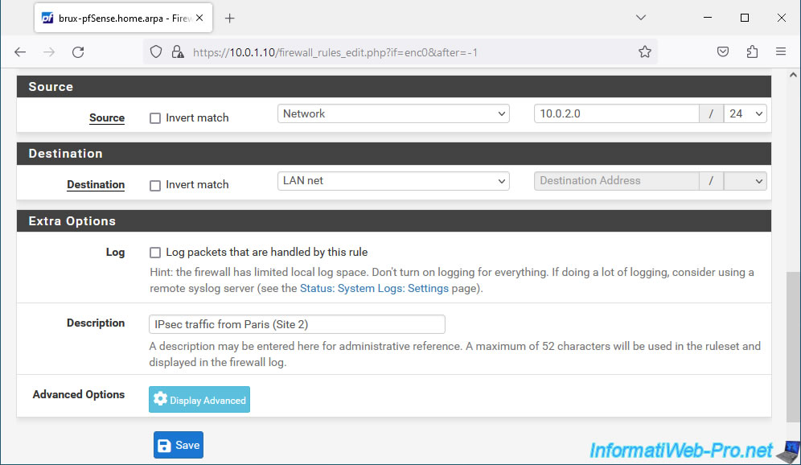
Pour un TP, « Any » suffit. En production, on n'ouvre que les flux nécessaires (par exemple SMB vers le serveur de fichiers, RDP vers un serveur précis).
ping 192.168.20.10 ; depuis le site 2, ping 192.168.10.10.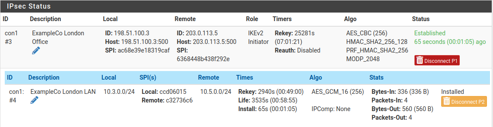
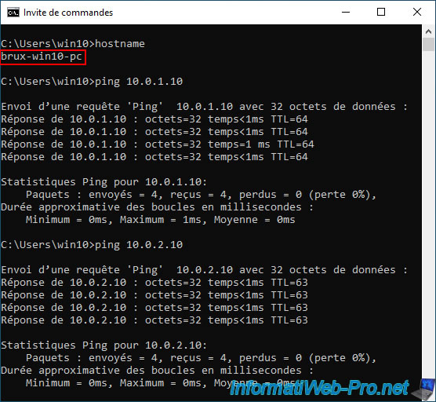
Journaux : Status → System Logs → IPsec.
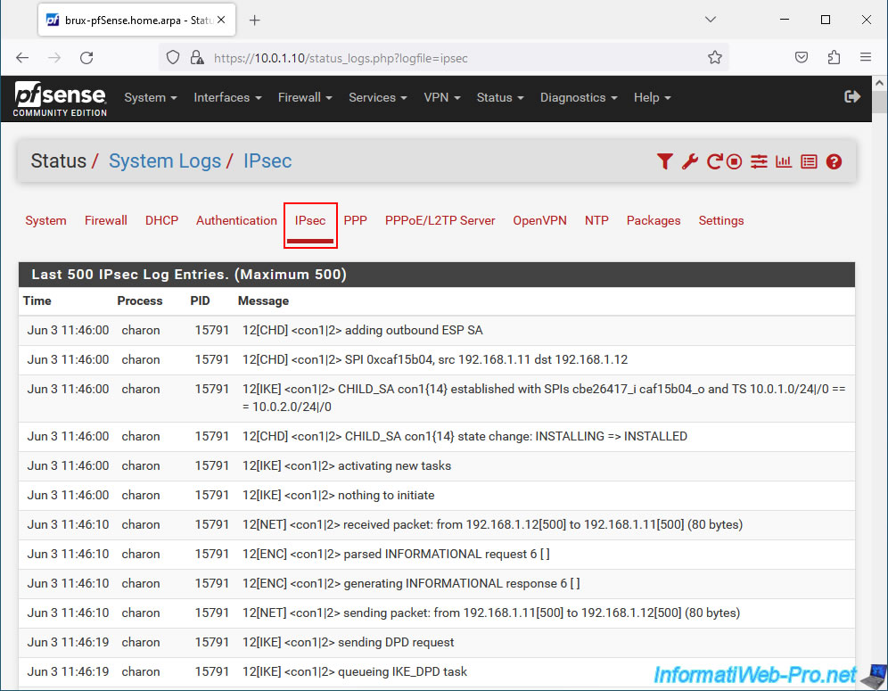
| Symptôme | Piste |
|---|---|
| Phase 1 ne monte pas | Passerelle distante injoignable (ping WAN à WAN), « Block private networks » encore coché, ports UDP 500/4500 filtrés en amont. |
NO_PROPOSAL_CHOSEN | Algorithmes, longueur de clé, hachage ou groupe DH différents entre les deux côtés. |
AUTHENTICATION_FAILED | Clé partagée différente, ou identifiants (My / Peer identifier) incohérents. |
TS_UNACCEPTABLE | Réseaux de la phase 2 non symétriques (local d'un côté ≠ distant de l'autre). |
| Tunnel établi mais pas de ping | Règle absente sur l'onglet IPsec, pare-feu du serveur (ICMP bloqué sous Windows), passerelle par défaut du serveur ≠ pfSense. |
Si le WAN du pfSense est derrière un autre routeur, sur chaque routeur amont :
Le NAT est détecté pendant la phase 1 : la suite des échanges bascule sur UDP 4500 (NAT-T).
Si les deux sites utilisent le même réseau (ex. 192.168.1.0/24), chacun se présente à l'autre sous une plage virtuelle
de même masque, traduite 1 pour 1 par le pfSense.
| Phase 2 | Site 1 (vu comme 192.168.10.0/24) | Site 2 (vu comme 192.168.20.0/24) |
|---|---|---|
| Local Network | Network 192.168.1.0/24 | Network 192.168.1.0/24 |
| NAT/BINAT translation | Network 192.168.10.0/24 | Network 192.168.20.0/24 |
| Remote Network | Network 192.168.20.0/24 | Network 192.168.10.0/24 |
Depuis le site 1, l'hôte 192.168.1.50 du site 2 se joint alors à l'adresse 192.168.20.50.
Plus robuste qu'une clé partagée : chaque pfSense prouve son identité avec un certificat signé par une autorité que l'autre reconnaît.
| Sur pfSense 1 | Sur pfSense 2 | |
|---|---|---|
| Autorité (System → Certificates → Authorities) | Importer la CA 2 (certificat seul, sans clé) | Importer la CA 1 |
| Certificat (System → Certificates → Certificates) | Certificat du pfSense 1, signé par la CA 1 | Certificat du pfSense 2, signé par la CA 2 |
Sources des captures : documentation officielle pfSense (docs.netgate.com, « IPsec Site-to-Site VPN Example with Pre-Shared Keys ») et InformatiWeb-Pro (« pfSense 2.6 – Create a site-to-site VPN tunnel via IPsec »). Schéma : support de cours BTS SIO.